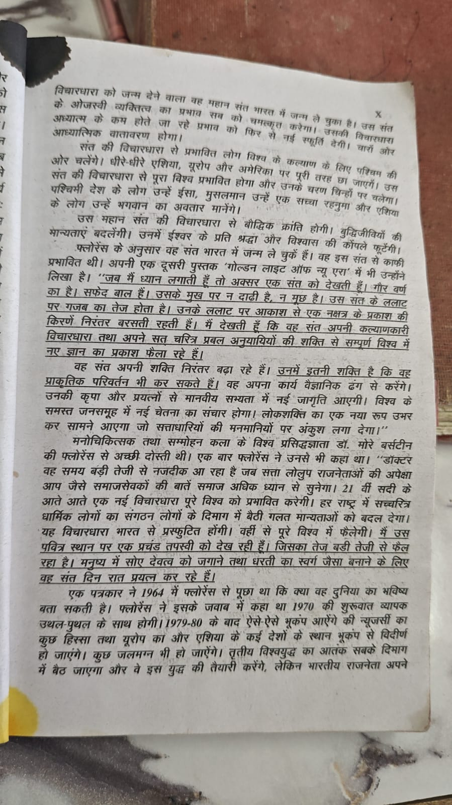
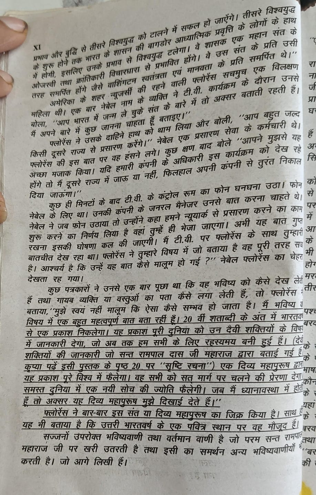

ज्ञान गंगा की भूमिका के रोमन-अंकित पृष्ठ X (10) और XI (11) पर Florence के नाम से प्रस्तुत भविष्यवाणियों की जाँच। शोध की स्थिति: 16 सितंबर 2026।
जाँच का आधार और उसकी सीमा
आधार पाठक द्वारा उपलब्ध कराई गई ज्ञान गंगा के पृष्ठ X और XI की तस्वीरें हैं। पूरी प्रति का संस्करण, प्रकाशन-वर्ष और शीर्षक-पृष्ठ उपलब्ध नहीं है। इसलिए पृष्ठ संख्या इन्हीं तस्वीरों के संस्करण की है; अन्य संस्करणों में पृष्ठ अलग हो सकते हैं। नीचे कथनों का सार दिया गया है, पूर्ण प्रतिलिपि नहीं। तस्वीरें अंत में उपलब्ध हैं।
मूल कथन के सत्यापन के लिए किसी समर्थक वेबसाइट पर उसका दोहराया जाना पर्याप्त नहीं है। लेखक की पहचान, घटना से पहले का दिनांकित प्रकाशन, प्रकाशक, संबंधित मूल पृष्ठ और स्वतंत्र पुष्टि अलग-अलग जाँचे जाने चाहिए। वेब खोज में किसी पुस्तक का न मिलना उसके कभी अस्तित्व में न होने का निर्णायक प्रमाण नहीं है।
1. पृष्ठ X — “गोल्डन लाइट ऑफ न्यू एरा” का मूल स्रोत
दावा: Florence ने अपनी पुस्तक में भारत के एक संत, उसके स्वरूप और विश्वव्यापी प्रभाव का वर्णन किया।
जाँच: तस्वीर में कथित पुस्तक का नाम है, लेकिन उसका प्रकाशक, प्रकाशन-वर्ष, संस्करण और उद्धरण का मूल पृष्ठ नहीं है। इस शोध में “Golden Light of New Era” तथा “Golden Light of a New Era” जैसे नामों से वेब खोज की गई। मूल प्रति या ऐसा स्वतंत्र पुस्तकालय रिकॉर्ड नहीं मिला जिससे इस उद्धरण की पुष्टि की जा सके। यह संपूर्ण विश्व के सभी पुस्तकालयों की जाँच होने का दावा नहीं है। ज्ञान गंगा का ऑनलाइन लेख भी इस पुस्तक का उल्लेख करता है, पर मूल पुस्तक का प्रतिरूप नहीं देता। स्रोत: ज्ञान गंगा का ऑनलाइन लेख।
निर्णय: असत्यापित attribution। अभी इसे Florence का प्रमाणित मूल कथन नहीं माना जा सकता।
2. पृष्ठ X — शारीरिक वर्णन रामपाल की विशिष्ट पहचान नहीं है
गोरा वर्ण, सफेद बाल और दाढ़ी-मूँछ न होना अनेक व्यक्तियों पर लागू हो सकता है। दिखाए गए कथित उद्धरण में रामपाल का नाम, जन्मतिथि या पहचान निश्चित करने वाला कोई अनन्य विवरण नहीं है। इसलिए कुछ समानताओं से यह निष्कर्ष निकालना कि भविष्यवाणी उन्हीं के लिए थी, तर्कसंगत रूप से पर्याप्त नहीं है।
17 अप्रैल 2013 की एक ब्लॉग पोस्ट में इसी कथित पुस्तक और मिलते-जुलते संत-वर्णन का प्रयोग श्रीराम शर्मा आचार्य तथा गायत्री परिवार के साहित्य से जुड़े संदर्भ में मिलता है। पोस्ट स्वयं कहती है कि स्थान और संत का नाम नहीं दिया गया। यह ब्लॉग भविष्यवाणी की सच्चाई का स्वतंत्र प्रमाण नहीं; यह केवल उस कथन के दूसरे संदर्भ में प्रसार का साक्ष्य है। इससे किसने किससे लिया, यह तय नहीं होता। स्रोत: 2013 की ब्लॉग पोस्ट।
निर्णय: रामपाल से विशिष्ट संबंध सिद्ध नहीं।
3. पृष्ठ X — Morey Bernstein की उपाधि
पृष्ठ में “डॉ. मोरे बर्स्टीन” को मनोचिकित्सक बताया गया है। यदि आशय Morey Bernstein से है, तो The Harvard Crimson की 16 मार्च 1956 की समकालीन पुस्तक-समीक्षा उन्हें Colorado का व्यवसायी और सम्मोहन का प्रदर्शन करने वाला व्यक्ति बताती है। उपलब्ध स्रोत यहाँ दी गई चिकित्सकीय योग्यता प्रमाणित नहीं करता। स्रोत: Jonathan Beecher की 1956 की समीक्षा।
व्यवसायी होना अपने-आप किसी अन्य योग्यता को असंभव नहीं बनाता। इसलिए सही आपत्ति यह है कि मनोचिकित्सक और “डॉ.” की उपाधि का प्रमाण चाहिए। Florence से उनकी कथित बातचीत का दिनांकित मूल रिकॉर्ड भी इन तस्वीरों में नहीं दिया गया है।
निर्णय: उपाधि तथा उद्धृत बातचीत असत्यापित।
4. पृष्ठ X–XI — भूकंप और विश्वयुद्ध का कथन
पृष्ठ X में 1964 के एक अनाम पत्रकार से बातचीत बताकर 1979–80 के बाद भूकंप और कुछ स्थानों के जलमग्न होने का कथन दिया गया है। पृष्ठ XI में भारत के नेतृत्व के प्रभाव से तीसरा विश्वयुद्ध टलने की बात आगे बढ़ती है।
पत्रकार, अखबार अथवा प्रसारण, सटीक तारीख, रिकॉर्डिंग और घटना से पहले प्रकाशित मूल पाठ नहीं दिए गए। “1979–80 के बाद” के लिए अंतिम समयसीमा भी नहीं है। इसलिए किसी बाद के भूकंप को चुनकर पूरा कथन सफल घोषित करना उचित नहीं है।
USGS के अध्ययन में 5 अप्रैल 2024 के New Jersey भूकंप की तीव्रता Mw 4.8 और भवनों को हुए नुकसान का विवरण है। यह रिकॉर्ड उस भूकंप का प्रमाण है; तस्वीर में कही गई व्यापक तबाही और जलमग्न होने की भविष्यवाणी की स्वतः पुष्टि नहीं। स्रोत: USGS, Preliminary observations of the April 5th, 2024, Mw4.8 New Jersey earthquake।
इसी तरह युद्ध के न होने मात्र से यह सिद्ध नहीं होता कि उसे किसी विशेष संत की प्रेरणा से रोका गया। इसके लिए संबंधित घटनाओं, निर्णयों और उनके कारणों के स्वतंत्र दस्तावेज चाहिए।
निर्णय: सफल भविष्यवाणी होने का प्रमाण नहीं। अस्पष्ट समयसीमा को अपनी ओर से निश्चित वर्ष मानकर विफलता घोषित करना भी उचित नहीं होगा।
5. पृष्ठ XI — New Jersey को “शहर” कहना गलत
पृष्ठ XI में New Jersey को अमेरिका का शहर बताया गया है। New Jersey अमेरिका का एक राज्य है। यह सीधी भौगोलिक गलती है। स्रोत: New Jersey राज्य की आधिकारिक वेबसाइट।
निर्णय: यह तथ्य गलत है। इस एक गलती से बाकी प्रत्येक कथन का झूठ होना अपने-आप सिद्ध नहीं होता।
6. पृष्ठ XI — Nebel, टीवी कार्यक्रम और अचानक फोन कॉल
कहानी का सार: Florence ने Nebel को दूसरे राज्य से प्रसारण करने की बात बताई। कुछ मिनट बाद कंपनी के जनरल मैनेजर ने फोन करके New York में प्रसारण शुरू करने और Nebel को वहाँ भेजने की सूचना दी।
स्वतंत्र रिकॉर्ड: यदि इस Nebel से आशय Long John Nebel है, तो Radio Hall of Fame के अनुसार उनका radio career 1954 में New York के WOR-AM से शुरू हुआ था। संस्था उन्हें मुख्यतः देर-रात के radio talk-show host के रूप में दर्ज करती है। स्रोत: Radio Hall of Fame।
ज्ञान गंगा के प्रसंग में कार्यक्रम की तारीख, टीवी चैनल, कंपनी, जनरल मैनेजर का नाम अथवा मूल रिकॉर्डिंग नहीं है। उनका पहले से New York में काम करना इस कथित स्थानांतरण की तारीख और संदर्भ को आवश्यक बनाता है। लेकिन radio host होना यह सिद्ध नहीं करता कि वे कभी टीवी पर नहीं आए; कोई नया स्थानांतरण भी केवल इस जीवनी से असंभव सिद्ध नहीं होता।
निर्णय: यह चमत्कार-कथा स्वतंत्र रूप से सत्यापित नहीं हुई। उपलब्ध रिकॉर्ड से इसे निश्चित रूप से घटित या निश्चित रूप से मनगढ़ंत घोषित करना उचित नहीं।
7. पृष्ठ XI — उद्धरण के बीच रामपाल की पुस्तक का संदर्भ
रेखांकित कथन के बीच कोष्ठक में रामपाल द्वारा बताई शक्तियों और इसी पुस्तक के पृष्ठ 20 पर “सृष्टि रचना” पढ़ने का निर्देश है। यह पुस्तक के भीतर दूसरे पृष्ठ की ओर भेजने वाला संपादकीय संदर्भ है; इसे Florence की अपनी स्वतंत्र पुष्टि नहीं माना जा सकता। तस्वीर से यह तय नहीं होता कि कोष्ठक मूल लेखक का है या बाद के संपादक का।
किसी दूसरे व्यक्ति के कथित शब्दों के बीच अपना पुस्तक-संदर्भ जोड़ने से वह व्यक्ति पुस्तक के दावों का प्रमाणदाता नहीं बन जाता। मूल अंग्रेज़ी पाठ मिलने पर ही देखा जा सकेगा कि Florence ने वास्तव में क्या कहा था और क्या बाद में जोड़ा गया।
निर्णय: कोष्ठक स्वतंत्र साक्ष्य नहीं है।
8. पृष्ठ XI — “रामपाल पर खरी उतरती है” का अंतिम निष्कर्ष
पृष्ठ का अंतिम अनुच्छेद कथित भविष्यवाणी को रामपाल से जोड़ता है। यह ज्ञान गंगा में किया गया निष्कर्ष है; इसे Florence द्वारा स्पष्ट रूप से रामपाल का नाम लेना नहीं समझना चाहिए। अनाम संत, उत्तरी भारत और विश्व में ज्ञान फैलाने जैसे सामान्य विवरणों से विशिष्ट पहचान निश्चित नहीं होती।
विश्वव्यापी स्वीकृति, प्रकृति बदलने की शक्ति और सभी लोगों को मार्गदर्शन देने जैसे बड़े दावों के लिए स्वतंत्र, जाँच योग्य प्रमाण चाहिए। संबंधित अनुच्छेदों में ऐसे प्रमाण प्रस्तुत नहीं हैं।
निर्णय: निष्कर्ष उपलब्ध प्रमाण से सिद्ध नहीं होता।
क्या Florence नाम की व्यक्ति थी?
Mabel Love के “The Woman Who Solved Crimes” नामक लेख के ऑनलाइन पुनर्प्रकाशन में Florence Sternfels और Edgewater, New Jersey का उल्लेख मिलता है। यह संभावित पहचान है, इन दो पृष्ठों की Florence से अंतिम पहचान नहीं। लेख चमत्कारों के पक्ष में किस्से प्रस्तुत करता है और असफल परामर्शों का भी उल्लेख करता है। इससे नियंत्रित परीक्षण में भविष्य जानने की क्षमता स्थापित नहीं होती। स्रोत: लेख का पुनर्प्रकाशन।
अंतिम आकलन
प्रमाणसम्मत निष्कर्ष: ज्ञान गंगा के उपलब्ध पृष्ठ X–XI में एक स्पष्ट भौगोलिक त्रुटि है; कई महत्वपूर्ण उद्धरण और घटनाएँ मूल स्रोत के बिना हैं; और रामपाल से जोड़ी गई भविष्यवाणी की विशिष्ट पहचान सिद्ध नहीं होती। इसलिए इन पृष्ठों को रामपाल की दिव्यता अथवा Florence की सिद्ध भविष्यदृष्टि का विश्वसनीय प्रमाण नहीं माना जा सकता।
“हर पंक्ति झूठी है” और “जानबूझकर धोखाधड़ी सिद्ध है”—ये उपलब्ध जाँच से अधिक व्यापक आरोप होंगे। नया मूल साक्ष्य मिलने पर संबंधित निष्कर्ष की पुनः जाँच की जा सकती है।
कौन-से प्रमाण अभी आवश्यक हैं?
- Florence का पूरा नाम और पहचान का स्वतंत्र रिकॉर्ड।
- कथित पुस्तक का शीर्षक-पृष्ठ, प्रकाशन-विवरण और संबंधित मूल पन्ने।
- 1964 के इंटरव्यू की दिनांकित मूल प्रति।
- Nebel के कार्यक्रम की तारीख, चैनल, रिकॉर्डिंग और कंपनी का रिकॉर्ड।
- रामपाल से संबंध बताने वाला बाद की व्याख्या से स्वतंत्र स्पष्ट कथन।
जिन पृष्ठों की जाँच की गई
पाठक द्वारा दी गई तस्वीरें। बड़ा देखने के लिए तस्वीर चुनें। ये ज्ञान गंगा में क्या छपा है उसका प्रमाण हैं; उसमें वर्णित घटनाओं के सच होने का प्रमाण नहीं।
{kind=link}

{kind=link}
